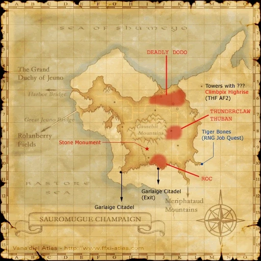

Level 75 reference · Zenith rules
|
Job: White Mage/Bard Notorious Monster |
|
|
Zone |
Level |
Drops |
Steal |
Spawns |
Notes |
|
55 |
1 |
A, S | |||
|
1 |
A, S | ||||
|
HP = Detects Low HP; M = Detects Magic; Sc = Follows by Scent; T(S) = True-sight; T(H) = True-hearing JA = Detects job abilities; WS = Detects weaponskills; Z(D) = Asleep in Daytime; Z(N) = Asleep at Nighttime | |||||



Image source
Notes:
- Spawns around I-10 from the back exit of Garlaige Citadel approximately every 21-24 hours.
- Four people are needed to open the Banishing Gates in Garlaige Citadel.
- Killable by: 12 characters level 60; 4 characters level 75.
- Special Attacks: Benediction, Massacre Elegy, Horde Lullaby, Draw In
- Rages after 20 minutes.
- Lower defense than its counterpart, Simurgh, but Benediction may sometimes restore up to 90% of Roc's HP.
- Very weak to Piercing damage, more than other birds. Is about a 1.75x modifier.
Adapted from Eden Wiki: Roc · Contributors and history · CC BY-SA 4.0. Revision 1641. Layout, links and optional background text adapted for Zenith.